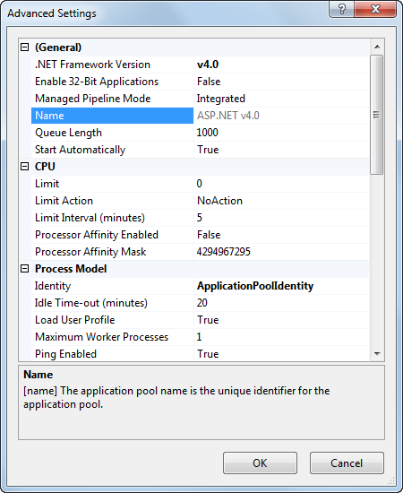

Creating virtual directories and application pools in IIS 7.5 and 7.0
If you need to install Kentico manually on a remote server or restore it from a backup and, at the same time, you run Kentico in a sub-folder (in contrast to running Kentico in the root of the website), you need to create a new virtual directory for the folder where you have the web project files.
Application root
The root of the website or the virtual directory must be the same as the folder that contains the web.config file of Kentico. This folder is called application root.
Creating a virtual directory in IIS 7.5 and 7.0
Since IIS 7, there exists a separate concept for a virtual directory and an application.
You can map a virtual directory to a physical directory that is located on a local or a remote computer. The physical directory (under the specified name of the virtual directory) then becomes part of the application's URL.
An application, on the other hand, is a group of files that provides services over protocols. So if you want to run your website as http://localhost/KenticoCMSDemo, you have to use an application instead of a virtual directory and specify KenticoCMSDemo as the application's alias.
You can find more information about virtual directories in Understanding Sites, Applications, and Virtual Directories on IIS 7.
To create a virtual directory:
1. Open IIS Manager
On Windows 7: Open Start -> Control Panel -> System and Security category -> Administrative Tools -> Internet Information Services (IIS) Manager.
On Windows Server 2008: Open Start -> Control Panel -> System and Maintenance category -> Administrative Tools -> Internet Information Services (IIS) Manager.
2. Expand local computer -> Sites -> right-click on Default Web Site (or other website if you're running multiple websites on the same computer) and choose Add Virtual Directory...
An Add Virtual Directory dialog appears.
3. Enter the Virtual Directory Alias. If you want the website to run as http://localhost/KenticoCMSDemo, enter alias KenticoCMSDemo.
4. Type a path or browse to the physical directory that contains the chosen directory.
5. Click OK.
The system creates a new virtual directory.
6. Right-click the virtual directory and choose Convert to Application.
An Add Application dialog appears.
7.Click Select... and choose the ASP.NET v4.0 application pool from the drop-down menu.
8. Click OK.
The system converts the virtual directory to an application.
Alternatively, you can create an application in one step by right-clicking a web site and choosing Add Application... and filling the required information in the Add Application dialog as mentioned above.
Configuring application pools in IIS 7 and IIS 7.5
Application Pools provide you with additional level of website management. You can configure them in the Internet Information Services (IIS) Manager under local computer -> Application Pools.

You can check and change the assigned application pool by right-clicking an application under local computer -> Sites -> Default Web Site (or other web site) and selecting Manage Application -> Advanced Settings...
You can set the Recycling and other options by right-clicking on an application pool under local computer -> Application Pools and selecting Advanced Settings....

Recommended Application Pool Configuration
Run each Kentico project in a separate application pool, otherwise the system may behave unpredictably. If you use the MVC development model, use a different application pool for your MVC live site application and the Kentico administration application.
Configure the Recycling -> Regular Time Interval value. The regular restart ensures that the application's memory is recycled and allows automatic recovery from failures. This value should not be too short (less than 60 minutes) or too long (more than 1740 minutes). Short restart intervals may lead to high server load and slow response times after each recycling (the application needs to restart and reload data into the cache).
Do not set a Recycling -> Private Memory Limit or Virtual Memory Limit. If you need to set a limit, use at least 4 GB. A low maximum memory limit may lead to frequent application restarts.
The Process Model -> Maximum Worker Processes value must be set to 1. If you set a higher value, the worker processes will not be synchronized and the website will not work correctly. Kentico does not support a Web garden setup.
You can configure the user account under which the application runs using the Process Model -> Identity value. This information is useful if you need to troubleshoot issues with permissions, such as disk write permissions.